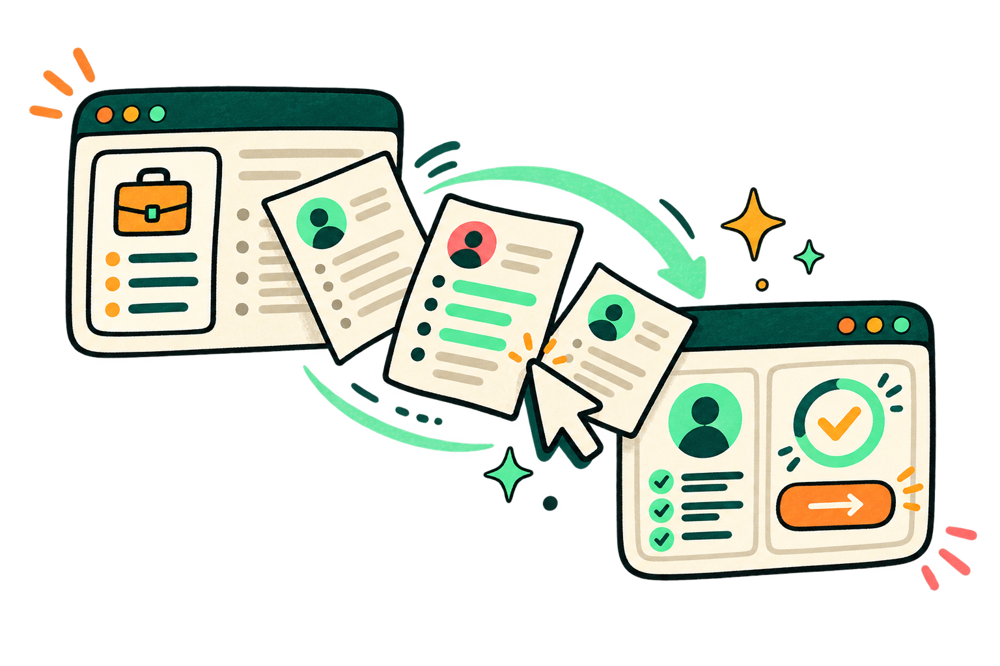

Análise de vaga, currículo e candidaturas
Você fez mais do que
seu currículo mostra.
Compare seu currículo com a vaga, veja o que a empresa pede e acompanhe cada candidatura até a entrevista.
Escolha seu ponto de partida
Depois disso, sua busca continua no mesmo lugar.Já tenho currículo
Quero analisar uma vaga ou receber oportunidades que combinam comigo.
Ainda não tenho currículo
Quero montar um currículo e começar a me candidatar.
Uma única jornada na VagaAI
- 01Vagas
- 02Currículo direcionado
- 03Candidaturas
- 04Entrevista
Vagas de vários portais
Você procura em cinco sites.
A VagaAI procura em todos.
Buscamos as vagas, comparamos com o seu currículo e colocamos na frente as que mais combinam com você.
 LinkedIn
gupy
indeed
Vagas.com
InfoJobs
Catho
Jooble
LinkedIn
gupy
indeed
Vagas.com
InfoJobs
Catho
Jooble
 Workday
Greenhouse
LinkedIn
gupy
indeed
Vagas.com
InfoJobs
Catho
Jooble
Workday
Greenhouse
Workday
Greenhouse
LinkedIn
gupy
indeed
Vagas.com
InfoJobs
Catho
Jooble
Workday
Greenhouse
As marcas pertencem aos seus titulares. A lista indica apenas os portais que a plataforma consulta.
Do primeiro envio à entrevista
Uma busca inteira,
num lugar só.
Analisar, ajustar, enviar e acompanhar. Sem trocar de ferramenta no meio.
Do que você já fez ao próximo passo
O que você já viveu, escrito do jeito que a vaga entende.
A vaga entra, o currículo é comparado, e você decide o que revisar antes de enviar.

Veja o que a vaga pede e o que o seu currículo já responde.
Cole a vaga e o seu currículo. Em segundos você recebe:
- A nota de compatibilidade, explicada critério por critério
- Os termos que a vaga pede e o seu currículo não menciona
- Um currículo ajustado para essa vaga, pronto para você revisar
As vagas chegam sem você ir atrás.
Diga o cargo, a cidade e o formato. A VagaAI consulta os portais e envia primeiro as que mais combinam com o seu currículo.
- Vagas de Gupy, LinkedIn, Indeed e outros portais no mesmo e-mail
- Filtro por cargo, cidade, salário e formato de trabalho
- Uma nota de compatibilidade em cada vaga, antes de você abrir
Nenhuma candidatura esquecida.
Cada vaga enviada fica com status, data e próximo passo. Se uma candidatura passa uma semana parada, a VagaAI avisa você por e-mail.
- Do "quero me candidatar" até a oferta, na mesma tela
- Carta de apresentação escrita a partir dos requisitos daquela vaga
- Treino de entrevista com perguntas do cargo e da empresa, com nota
5 pontos fortes · 2 termos para revisar
Vaga recomendada
91%Combina com seu currículo
84%Nova vaga para avaliar
79%O que costuma acontecer
Você não recebe resposta.
Então não tem como corrigir.
O currículo foi enviado e sumiu. Não dá para saber se a vaga não combinava, se o filtro automático barrou antes de alguém ler, ou se faltou dizer o que aquela empresa procurava. Sem essa informação, o próximo envio repete o mesmo erro.
Para quem é
Feito para quem
está procurando agora.
Primeiro emprego ou mudança de área
Envia muito currículo e recebe pouca resposta
Não sabe se o currículo passa pelos sistemas que filtram candidatos antes do RH ler
Quer chegar preparado na entrevista
Quem já usa
Quem usou,
conta o que mudou.
Planos
Comece de graça.
Assine quando valer a pena.
Use sem cartão. Assine quando precisar analisar mais vagas e usar os recursos completos.
Gratuito
Para começar
Analise uma vaga, monte seu currículo e conheça a plataforma.
R$0 Começar grátisSem cartão- 1 análise completa por mês
- Nota de compatibilidade e análise da vaga
- Termos que a vaga pede e currículo ajustado
- Currículo salvo na sua conta
- 1 alerta semanal com até 5 vagas
- Controle de candidaturas
Pro
Para quem está em busca ativa
Análises sem limite, currículo e carta prontos para cada vaga, e treino antes da entrevista.
R$39,90/mês Assinar ProCobrança mensal, cancele quando quiser- Tudo do plano Gratuito
- Análises sem limite
- Currículo ajustado em PDF para cada vaga
- Carta de apresentação para cada vaga
- Até 10 alertas diários, sem limite de vagas por envio, com filtros avançados
- Treino de entrevista com nota e resposta-modelo
Dúvidas
Perguntas antes de começar.
Preciso pagar para usar?+
Não. O plano gratuito funciona sem cartão. Os planos pagos liberam mais análises e recursos.
Preciso criar conta?+
A primeira análise você faz sem conta. Para guardar currículo, candidaturas e alertas, e acessar de outro aparelho, precisa de uma conta gratuita.
Posso usar o currículo que já tenho?+
Sim. Envie em PDF, Word ou TXT. Se preferir montar um do zero, o editor guia você por seções.
A VagaAI garante que meu currículo passe no ATS?+
Não. ATS é o sistema que filtra currículos antes de um recrutador ler, e cada empresa usa critérios próprios. O que fazemos é organizar o currículo e mostrar os termos que a vaga pede.
A inteligência artificial inventa experiência?+
Não. Trabalhamos só com o que você escreveu. Quando a vaga pede algo que você não tem, dizemos isso, e não sugerimos escrever que tem.
Posso cancelar?+
Sim, a qualquer momento. O acesso continua até o fim do período já pago.
Para ler agora
Conteúdo para usar hoje.
Próximo passo
Comece por uma vaga.
Ou pelo seu currículo.
Os dois caminhos levam ao mesmo lugar: saber o que fazer no próximo envio.
Grátis para começar · Sem cartão · Você revisa tudo antes de usar